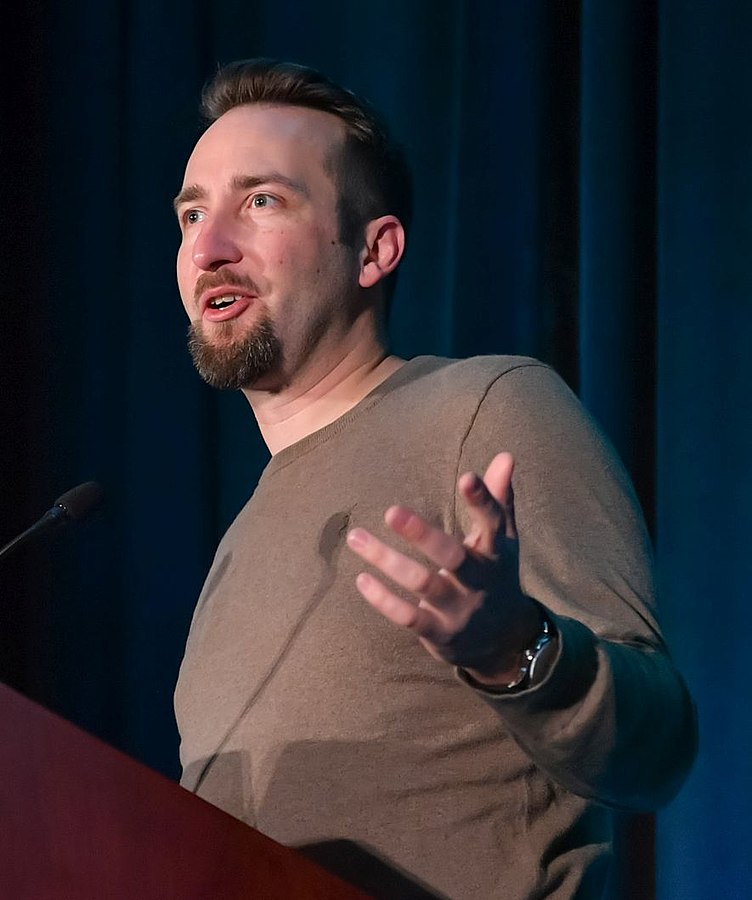

Development:
Lead designer Brendan "PlayerUnknown" Greene at the 2018 Game Developers Conference
Lead designer Brendan Greene, better known by his online handle PlayerUnknown, had previously created the ARMA 2 mod DayZ: Battle Royale, an offshoot of popular mod DayZ, and inspired by the 2000 Japanese film Battle Royale.[9][10] At the time he created DayZ: Battle Royale, around 2013, Irish-born Greene had been living in Brazil for a few years as a photographer, graphic designer, and web designer, and played video games such as Delta Force: Black Hawk Down and America's Army.[11][12] The DayZ mod caught his interest, both as a realistic military simulation and its open-ended gameplay, and started playing around with a custom server, learning programming as he went along.[11] Greene found most multiplayer first-person shooters too repetitive, considering maps small and easy to memorize. He wanted to create something with more random aspects so that players would not know what to expect, creating a high degree of replayability; this was done by creating vastly larger maps that could not be easily memorized, and using random item placement across it.[13] Greene was also inspired by an online competition for DayZ called Survivor GameZ, which featured a number of Twitch.tv and YouTube streamers fighting until only a few were left; as he was not a streamer himself, Greene wanted to create a similar game mode that anyone could play.[13] His initial efforts on this mod were more inspired by The Hunger Games novels, where players would try to vie for stockpiles of weapons at a central location, but moved away from this partially to give players a better chance at survival by spreading weapons around, and also to avoid copyright issues with the novels.[10] In taking inspiration from the Battle Royale film, Greene had wanted to use square safe areas, but his inexperience in coding led him to use circular safe areas instead, which persisted to Battlegrounds.[10]
When DayZ became its own standalone title, interest in his ARMA 2 version of the Battle Royale mod trailed off, and Greene transitioned development of the mod to ARMA 3.[11] Sony Online Entertainment (now the Daybreak Game Company) had become interested in Greene's work, and brought him on as a consultant to develop on H1Z1, licensing the battle royale idea from him.[11] In February 2016, Sony Online split H1Z1 into two separate games, the survival mode H1Z1: Just Survive, and the battle royale-like H1Z1: King of the Kill, around the same time that Greene's consultation period was over.[14]
Separately, the Seoul-based studio Ginno Games, led by Chang-han Kim and who developed massively multiplayer online games (MMOs) for personal computers, was acquired and renamed Bluehole Ginno Games by Bluehole in January 2015, a major South Korean publisher of MMOs and mobile games.[15][16] Kim recognized that producing a successful game in South Korea generally meant it would be published globally, and wanted to use his team to create a successful title for personal computers that followed the same model as other mobile games published by Bluehole. He had already been excited about making a type of battle royale game after he had played DayZ, in part that the format had not caught on in Korea. He also wanted to make this through an early access model and have a very limited development schedule to get the game out as quickly as possible, while treating the product as a "games as a service" model to be able to support it for many years.[15] In researching what had been done, he came across Greene's mods and reached out to him.[15] In July 2017, Bluehole partnered with social media platform Facebook to provide exclusive streaming content to Facebook's gaming channels, as part of their pushing to provide more gaming content for its users.[17]
Around the same time that Greene left Sony Online, Kim contacted and offered him the opportunity to work on a new battle royale concept. Within a week, Greene flew out to Bluehole's headquarters in Korea to discuss the options, and a few weeks later, became the creative director of Bluehole. He moved to South Korea to oversee development.[13] According to Greene, this was the first time a Korean game studio had brought aboard a foreigner for a creative director role, and while a risk, he says that his relationship with Bluehole's management is strong, allowing Greene's team to work autonomously with minimal oversight.[6] The game's main musical theme was composed by Tom Salta, who was personally selected by Green as he and the team were looking for an "orchestral electronic hybrid theme" that would give players a "huge build-up", keeping them "resolutely determined" until a match starts.[18]
Development began in early 2016 and was publicly announced that June, with plans to have the game ready within a year.[19][20] Kim served as executive producer for the game.[13] Bluehole started with a team of about 35 developers supporting Greene's work, but had expanded to 70 by June 2017.[21] Greene stated that many of these developers were voluntarily putting in longer work hours into the game due to their dedication to the project, and not by any mandate from himself or Bluehole's management.[13][22] In addition to Bluehole, Greene also credits Bohemia Interactive, the developers of ARMA and DayZ, for support with motion capture animations via their Prague studio.[22][21]
With the rapid growth of interest in the game, Bluehole spun out the entire development for Battlegrounds into Bluehole Ginno Games in September 2017, which was renamed PUBG Corporation with Kim as its chief executive officer. PUBG Corporation continued the development of the game and its marketing and growth, opening an office in the United States with plans for future ones in Europe and Japan.[23] In August 2018, PUBG Corporation launched the "Fix PUBG" campaign, acknowledging that that game by then still had several lingering bugs and other performance issues.[24] The campaign finished in November, with PUBG Corporation calling it a success as everything listed had been implemented by then.[25]
Design:
Battlegrounds represents the standalone version of what Greene believes is the "final version" of the battle royale concept, incorporating the elements he had designed in previous iterations.[6][26] Faster development was possible with the game engine Unreal Engine 4, compared with ARMA and H1Z1, which were built with proprietary game engines. Greene acknowledged that implementing the size of the maps in Battlegrounds has been one of the challenges with working with Unreal, which was not designed with such maps in mind.[6][11] The game was designed as a mix between the realistic simulation of ARMA 3 and the arcade-like action focus and player accessibility of H1Z1.[5][13]
Based on Greene's experience with the genre, an island with many terrain features was picked as the first map, known as "Erangel".[10] The map design scope was to offer players many possible options for strategic and unique gameplay.[4] Some buildings and structures were designed to depict the style of the brutalist architecture of the Soviet Union during the 1950s. The developer team playtested architecture features and random item placement systems, looking at both how close-quarters encounters went, and for open terrain areas.[4] The goal was to optimize the right distribution and placement of weapons and gear across the map, to encourage players to make strategic decisions about how to proceed in the game without overly penalizing players who may not find weapons within the first few minutes of a round.[6] During early access, additional maps were planned, such as one set on a fictional island in the Adriatic Sea that included snow-covered Yugoslavian territories.[27][21] Greene stated that he thought the Erangel map felt disjointed despite meeting their goals for gameplay, and sought to create more unified ideas with future maps.[10]
The freefall from an airplane at the start of each match was a new feature for the genre, to encourage strategy between staying with the pack of players or seeking out one's own route for a better chance at finding good loot.[6] With the added parachute drop, Greene considered that Battlegrounds had three distinct subgames: the airdrop during which one must quickly figure out the best time to jump and where to land in relationship to the other players, the loot game of knowing where and how to gather the best possible equipment, and the combat game with other players.[28] Players who win a match are greeted with the phrase "winner winner chicken dinner", an idiom that Greene had used in his prior battle royale games and kept in Battlegrounds, which itself had origins as early as the Great Depression.[29]
Features that Greene anticipates adding include custom games and modding support.[6][13] He considered modding support an essential part of the full release as, just as he had his start with mods, he wants to enable others to create variations on his game so that he can "find the next PlayerUnknown".[30] Greene also wants to incorporate the game with streaming services like Twitch.tv that would enable replays or other features amenable to treating Battlegrounds as an esport.[6][13] Greene had anticipated that Battlegrounds would develop into an esport, and this was an ultimate end goal for his development, but he wanted to let the nature of how it would play out as an esport grow naturally with the player community.[12] He also plans to introduce microtransactions to allow players to use real-world funds to purchase loot crates that provide randomly-selected cosmetic items, also known as "skins", which they can trade with other players; while Greene recognizes the issue with skin gambling, he believes that Valve has put safeguards in place to support a "skin economy" that will provide further revenue for them without concerns over gambling.[7] However, by November 2017, gray market skin gambling sites began to appear, using Battlegrounds cosmetics as virtual currency.[31] Following controversy over the use of loot boxes to offer "pay-to-win" items in other games in November 2017, the PUBG Corporation affirmed that while they will continue to add new cosmetic items rewarded by in-game crate purchases, they "will never add anything that affects the gameplay".[32] In May 2018, PUBG Corporation disabled the ability to trade skins on the Steam Marketplace as they found that players were still abusing the system by selling them for monetary value through unofficial third-party platforms.[33]
While in early access, Bluehole offered an early preview of the system by offering time-limited crates that could be purchased during the first Battlegrounds Invitations tournament during Gamescom in August 2017, with the sales from these contributing to the prize pool. Among loot from these crates are special outfits inspired by the Battle Royale movie.[34] Greene anticipates adding a campaign mode with co-operative player support, though there would be "no serious lore" crafted for the narrative, comparing this to similar modes in Watch Dogs.[35]
The game, while in early access, has already received alternate gameplay modes created by players, determined by unenforceable rules that players agree to abide by, that have been popular with streamers. This was aided by a quiet release of custom server support to a number of influential streamers which subsequently made it into public release.[22] In one case, "Zombie Mode", all but four players pretend to be zombies, who may sometimes distinguish themselves by removing all clothing and are limited only to collecting melee weapons and consumable items, and must rush to attack the other four players, who are able to collect all gear and attempt to outrun and defeat the zombies.[36] Inspired by this mode, Greene announced plans to introduce an official zombie-based gameplay mode based on this into Battlegrounds.[37] Whereas most of the rest of the team continued to develop the core gameplay and maps, Greene is taking on the zombie mode as a near solo project, only using the assistance of the lead animator to help with the zombie animations.[21] Greene sees Battlegrounds as a platform, and would like to see more custom game types and mods developed by players for it.[11] Greene identified that some mods that he also previously worked on from ARMA 3 may become part of the Battlegrounds platform.[11]
To prevent in-game cheating, the game uses the "BattlEye" anti-cheating software, which had permanently banned over 13 million players in total by October 2018.[38][39] BattlEye indicated that 99% of all cheating software for the game was developed in China.[40]
Release:
Windows
Bluehole used closed alpha and beta periods with about 80,000 players to gauge initial reaction to the gameplay and adjust balance prior to a wider release.[13][41] Just prior to the early access phase on Steam, Bluehole opened a few servers and invited some popular live streamers of similar games to try it out as to start gaining interest.[42] Early access for the Windows version launched on March 23, 2017.[43] This period was planned to last approximately six months, originally aiming for a September 2017 release.[43][44] In July 2017, Greene announced that they would need to extend the early access period by a few months, continuing to release updates on a regular basis, with plans to still release by the end of 2017, as committing to this original period "could hinder us from delivering a fully featured game and/or lead to disappointment within the community if the launch deadline is not met".[45] Initially, Bluehole had expected that they would just gain enough players through early access to smooth out the gameplay, and only when the game was completed, they would have started more marketing for the title. The sudden interest in the game from early access exceeded their expectations, and put emphasis on the stability of the game and its underlying networking alongside gameplay improvements.[41] Through August 2017, these updates generally included a major weekly patch alongside major monthly updates that provided key performance improvements.[46][5][19] However, from August onward Bluehole backed off the rate of such patches, as the high frequency has led to some quality control issues, and the developers rather make sure each patch content is well-vetted by the community before providing new updates; this did not change their plans for a 2017 release, where it fully released out of early access on December 20.[47][48]
In part of the game's success in early access, Tencent Games, the largest publisher of video games in China, approached Bluehole that same month with an offer to publish Battlegrounds in China and purchase equity in the company.[49] However, the China Audio-Video and Digital Publishing Association issued a statement in October 2017 that discouraged battle royale-style games, stating that they are too violent and deviate from Chinese values of socialism, deeming it harmful to young consumers.[50][51] The following month however, PUBG had reached a formal agreement with the Chinese government to allow the release of the game in the country, with Tencent as the publishing partner.[52] However, some changes were made to make sure it aligned with socialist values and traditional Chinese morals.[53] In South Korea, the game is marketed and distributed by Kakao Games.[54]
Despite the lack of a Chinese publisher prior to the Tencent deal, players in China had found ways to acquire and play the game through Steam via proxies and other networking tricks.[55] To address it, PUBG Corporation planned to add maximum client ping limits for servers which can reduce the issues with latency problems and prevent some of the cheating that has occurred. This would not prevent cross-region matchmaking but may make it difficult for some players to play outside their region if they have a poor Internet infrastructure.[56] Tencent has also helped by identifying and reporting around 30 software programs to Chinese police that can be used to cheat in Battlegrounds, leading to over a hundred arrests by the beginning of 2018.[57] Separately, this technical issue, in addition to the larger number of Chinese players, has created complaints in the player community. Some Western players fear that many Chinese players are able to cheat in the game by exploiting some of the network latency issues, something that PUBG Corporation continued to address as the game shifted out of early access. However, a small number of players called for server segregation by region, and had used racial insults at Chinese players they encounter in game. Greene was disappointed with this "xenophobic attitude", calling it "disgraceful", and asked the player community to respect the Chinese players more as their numbers were a key part of the game's success.[55] Greene also identified that players can easily get around such region locks using virtual private networks, making this approach ineffective.[58] PUBG Corporation eventually added region-based matchmaking by October 2018, though players still reported issues with connectivity and slow matchmaking.[59]
Xbox One:
Greene was part of Microsoft's press conference during E3 2017 to announce that Battlegrounds would be coming to Xbox One as a timed console exclusive sometime by the end of 2017, using the Xbox Game Preview early access approach to test it.[60] [61][62][41
Initially, Greene said that Microsoft was not directly involved in the porting but only providing assistance to make sure the port is good, and that most of the porting responsibilities are being done by Anticto, a Spanish developer.[30] However, at Gamescom that year, Bluehole affirmed that Microsoft Studios would be publishing the Xbox One version of the title, helping to make a planned 2017 release for this version.[63] Greene said that Microsoft's support has helped in several ways, not only for the Xbox One version but improving the performance and security of the Windows version. Further, by being part of the group of studios under the Microsoft banner, they have been able to talk and incorporate technology from other developers, such as improved water rendering techniques they obtained from Rare that they had developed for Sea of Thieves.[64] Microsoft considered Battlegrounds to be an important project to demonstrate their company's ability to be more than just a publisher, according to Microsoft's Nico Bihary who lead the project. Bihary said they have given Battlegrounds a "white glove" treatment, and for the Xbox One port have provided services from their advanced technology group and time and support from The Coalition, another of Microsoft Studios' subsidiaries.[65] Kim also stated that the team was interested in cross-platform play between the Windows and console versions, but did not anticipate this as a release feature, as they need to determine how to mitigate the advantage keyboard and mouse-using players would have over those using controllers.[41]
Titled "Game Preview Edition", the early access version for the Xbox One was released on December 12, 2017 in both digital and physical formats.[66][67][68] To promote it, Microsoft performed real-life supply crate drops in Australia in the week prior, with the crates containing Xbox hardware, Battlegrounds merchandise, and other goods, using passcodes published alongside the drop locations on social media.[69] The Xbox version also includes Xbox-specific in-game cosmetic items, some which could be purchased directly rather than through in-game crates.[70] The official release out of the Game Preview program occurred on September 4, 2018.[71][72]
Mobile versions:
Following the Chinese publication deal for the Windows version, Tencent Games and PUBG Corporation additionally announced that they were planning on releasing two mobile versions based on the game in the country.[73][74] The first, PUBG: Exhilarating Battlefield, is an abridged version of the original game, and was developed by Lightspeed & Quantum Studio, an internal division of Tencent Games.[75] The second, PUBG: Army Attack, includes more arcade-style elements, including action taking place on warships, and was developed by Tencent's Timi Studio.[76] Both versions are free-to-play, and were released for Android and iOS devices on February 9, 2018.[77][78] The games had a combined total of 75 million pre-registrations, and ranked first and second on the Chinese iOS download charts at launch.[78] Following a soft launch in Canada, an English version of Exhilarating Battlefield, localized simply as PUBG Mobile, was released worldwide on March 19, 2018.[79][80][81]
PlayStation 4:
With the announcement of the Xbox release, PUBG Corporation stated that there were plans to port to additional platforms, such as the PlayStation 4.[82][83][84] In an interview shortly after Gamescom, Greene said that their deal with Microsoft did not exclude a PlayStation 4 port, but that their focus at the time was only on the Windows and Xbox One version, given the small size of their team.[64][49] When asked about it in January 2018, Kim stated that the team released the game first on the Steam and Xbox Game Preview early access programs as they both easily allowed in-development games to be released and updated over time, which contrasted with Sony's lack of their own early access program, as well as their strict quality control for even completed games.[85] The PlayStation port was officially announced in November, and was released on December 7, 2018. PUBG Corporation studio head Brian Corrigan said that while they had had a small team working on the PlayStation 4 port for some time, it was only until the Xbox One port was mostly completed that they began fully working on the PlayStation port.[86] The PlayStation 4 version of the game includes platform-exclusive customization items, specifically the outfit of Nathan Drake from the Uncharted series, and Ellie's backpack from The Last of Us.[87] A short live-action film to promote the PlayStation 4 release was directed by Jordan Vogt-Roberts and starred Jason Mitchell.[88]
PUBG Lite:
PUBG Lite is a free version of Battlegrounds that is meant to be better playable on low-end computers by having significant reductions in graphic details and other features, but is otherwise feature complete with the full game. The version is meant to be played in regions where the game's minimum specifications may be difficult for average players to achieve, such as areas in Southeast Asia, with a beta launch first releasing in Thailand in January 2019.[89]
Esports:
To celebrate the game surpassing two million copies sold, Bluehole announced a 2017 Charity Invitational event, inviting 128 players to compete over their official Twitch.tv channel to raise money for the Gamers Outreach Foundation, with Bluehole matching all donations up to US$100,000.[90] The competition ran in early May 2017, and raised at least US$120,000 from viewers along with Bluehole's US$100,000 match, and served as a prototype for future esports events for the game.[91] During the August 2017 Gamescom event, Bluehole and ESL organized the first Battlegrounds invitational tournament, with a $350,000 prize pool. Separate events were held for solo players, two-player teams, two-player teams fixed to first-person perspective, and four-player squads. Each event featured three matches, with the player or team scoring the highest across all three named winners.[34][92][93]
Greene said that while he had envisioned the battle royale format to be a spectator sport since his ARMA II mod, their approach to making Battlegrounds an esport would be a matter of taking "baby steps". Greene said that they would not actively pursue esports until after the game was fully released and that all major bugs were eliminated. The Gamescom 2017 event demonstrated the issues surrounding the logistics of running a large Battlegrounds tournament with a large number of players involved, and they had worked alongside ESL to explore how to do this effectively in the future. Further, Green stated there was also the need to establish a format for presenting a Battlegrounds match to make it interesting to spectators, which he thought would take some time to develop given the nature of the emergent gameplay, comparing it to established first-person shooters and multiplayer online battle arena esport games.[94] A 20-team, 80-player tournament produced by Intel took place in Oakland in November 2017, with a prize pool of US$200,000.[95][96]
Reception:
The game received "generally favorable reviews", according to review aggregator Metacritic.[97] During both its early access phase and after, Battlegrounds also surpassed numerous player-count records. Bluehole released statistics for the first four months of release that showed that over ten million rounds of Battlegrounds had been played, effectively equal to more than 25,000 man-years of time.[107] Data by SteamSpy showed that Battlegrounds had surpassed long-standing popular titles in concurrent player count on Steam, such as Fallout 4 and Grand Theft Auto V, eventually overtaking Dota 2, the most played game on the platform for years, in August 2017.[108][109] The following month, the game had its peak concurrent player count reach over 1.3 million, surpassing Dota 2's all-time record of 1.29 set in March 2016.[110][111][112] The game then reached a concurrent player count of two million in October 2017,[113] and three million by the end of the year.[114] The game has also been shown popular in South Korean PC bangs; analysis firm Gametrics reported that Battlegrounds had surpassed Overwatch and became the second-most played game in the country by August 2017, only behind League of Legends,[115] it subsequently surpassed League of Legends by October 2017.[116] Battlegrounds's popularity from Chinese players led to a large increase in users of Steam from that geographic region, and by November 2017, more than half of users knew Chinese (superseding English, which was the primary language in the platform) due to the game's availability.[55]
Several journalists commented on the game's rapid growth towards a large player base for a game that was still in early access. Greene had confidence that the game could reach over a million players within a month, but some of his development team were only anticipating around 200,000 to 300,000 within the first year, and were surprised by its performance in its first month.[117] Greene himself believed that the strong growth was buoyed by non-traditional promotional channels like Twitch streamers and other content creators, which they have since worked to introduce new gameplay elements ahead of public release.[64] IGN's Rad believed that the popularity of the game was due to its fast-paced nature compared to similar type games available at the time, such as H1Z1 and DayZ. She thought that the design balanced the solitary periods when the player is scavenging or sneaking around with those of being in combat with others, and the approach is readily accessible to new players with very little waiting time to get into a new match.[118] Andy Moore for Glixel considered that Battlegrounds's popularity comes from how the game encouraged players to engage due to the situation they are placed in rather than from the player's own disposition, comparing it to the Stanford prison experiment, and thus able to capture the interest of players who may normally eschew these types of games.[119]
Rock Paper Shotgun's Michael Johnson described Battlegrounds as "a tactical shooting sandbox, a story generator, and a horror game all in one", providing some of the "highest highs" in multiplayer gaming as reason for its popularity.[120] Rob Zacny for Waypoint found that Battlegrounds offered the same type of entertainment experience for viewers that many other player-vs-player survival games have, but because of the lack of persistence, players were more likely to experiment with resources rather than hoard them, leading to humorous or unexpected situations that are often absent in survival games and making the title more enjoyable to watch and play, leading to its popularity.[121] Jeff Grubb of Venture Beat considered Battlegrounds as a paradigm shift in the first-person shooter market similar to how Call of Duty 4: Modern Warfare also changed the landscape of shooters when it was released in 2007, and believed it did this by being an anti-Call of Duty in terms of pacing and strategy.[122]
Battlegrounds is considered the defining game of the battle royale game genre due to its popularity, even though other games, including Greene's previous mods, were already on the market.[123] After its large early access sales numbers, other games followed with battle royale mechanics, with either existing games that added a battle royale mode or fully new games. Notably, Epic Games updated their in-development title Fortnite, a sandbox-based survival game that included the ability to construct fortifications, to include a battle royale mode that retained the fortification aspects. Known as Fortnite Battle Royale, Epic later released it as a standalone free-to-play game in September 2017. Shorty after its release, Bluehole expressed concerns about the game, acknowledging that while they cannot claim ownership of the battle royale genre, they feared that since they had been working with Epic for technical support of the Unreal engine, that they may have had a heads-up on planned features they wanted to bring to Battlegrounds and could release it first.[124] PUBG Corporation later filed a lawsuit against Epic Games Korea in January 2018, alleging that Fortnite Battle Royale was infringing the copyright of Battlegrounds.[125] However, the lawsuit was closed by PUBG in June 2018 for undisclosed reasons.[126]
Greene had expressed concern on the large number of games that have simply cloned the Battleground mechanics, particularly in China where clones of Battlegrounds are considered a new genre of "chicken-eating game" (based on the "winner winner chicken dinner" line to a match winner in Battlegrounds).[127][128] Greene said "I want this genre of games to grow. For that to happen you need new and interesting spins on the game mode. If it's just copycats down the line, then the genre doesn't grow and people get bored."[123] Greene claimed no ownership of the battle royale or last man standing genres, but believed that the clones were taking some specific mechanics he had developed in Battlegrounds and prior mods, such as the initial parachuting segment or the red-zone bombing runs, and would like to see legislation to give developers such as himself protection against these types of concepts as well as improve creativity as developers invent new approaches to mimic such innovations.[129] Battlegrounds's explosive growth and how it popularized the battle royale genre was considered to be one of the top stories in the video game industry during 2017.[130][131][132]
Prior to release of their mobile versions, PUBG Corporation initiated legal action in the Northern Distinct Court of California against Chinese game publisher NetEase in January 2018, claiming that their mobile games Rules of Survival and Knives Out infringe on Battlegrounds's copyrights. PUBG's lawsuit asserts that Rules of Survival is "a copyrightable audio-visual work, individually and/or in combination with other elements of Battlegrounds", and identified several elements that appear similar in both games. While some of these elements are common features of a battle royale game, PUBG asserted that other elements reference specific facets of Battlegrounds, such as references to chicken for winning a game or using cookware as weapons or armor, makes Rules of Survival imply a connection to Battlegrounds. PUBG seeks both monetary damages and requiring NetEase from further distribution of the games. NetEase, in responding to PUBG's request to Apple to remove the games, denied that their games violated Battlegrounds's copyrights.[133][134]
Sales:
Battlegrounds made US$11 million in the first three days of its Windows early access release in March 2017.[135] By the second week of April, the game had sold over one million copies, with a peak player count of 89,000,[136] SuperData Research estimated that the game's April sales exceeded US$34 million, putting it as one of the top 10 highest grossing revenue games for the month and exceeding revenue from Overwatch and Counter-Strike: Global Offensive.[137] By May 2017, the game had sold over two million copies, with total gross revenues estimated at US$60 million.[138][60] Within three months of its early access release, it had surpassed over five million copies sold,[139] and Bluehole announced it had exceeded US$100 million in sale revenue.[140] Battlegrounds reached this four million mark faster than Minecraft, which took over a year to reach similar sales figures while it was in its paid-beta development period.[141]
By September 2017, Bluehole's value, as tracked by a firm that tracks private Korean corporations, increased five-fold from June of that year to a value of US$4.6 billion, primarily due to Battlegrounds.[49] By December 2017, PUBG Corporation reported that there were more than 30 million players worldwide between the Windows and Xbox versions.[142] The research film SuperData estimated that Battlegrounds drew in more than US$712 million in revenue within 2017.[143] By February 2018, the game had sold over thirty million on Steam according to SteamSpy.[144] The following month, Gabe Newell stated that the game was the third highest-grossing game of all time on the platform.[145]
Within three days of going live on the Xbox Live Preview Program in mid-December 2017, Microsoft announced that Battlegrounds had sold more than a million copies on the platform. Alongside this, Microsoft announced that Battlegrounds would be offered as a free add-on for those buying the Xbox One X console through the end of 2017.[146] A month after release, the Xbox version had sold more than four million copies and was the fourth bestselling game in the United States, according to The NPD Group.[147][148] By March 2018, the game had sold forty million copies across all platforms, which had risen to over fifty million by June, averaging over 87 million players daily with over 400 million players in total.[149][150] The mobile version in particular had over 100 million downloads by August 2018,[151] and exceeded 225 million by October 2018,[152] a figure higher than the combined player base for Fortnite at nearly the same point in time. The bulk of these players are in Asian countries such as China and India, where PUBG Mobile was released before Fortnite and can run on lower-powered mobile hardware.[153][154] China has the game's largest player base,[152] and PUBG is the most popular online game in India, as of 2018.[155]
PUBG Mobile was the second most-downloaded mobile game of 2018, with nearly 300 million downloads worldwide. The game's largest market was China, which accounted for 29% of the game's downloads, followed by India and the United States each with about 10% (30 million) of its downloads. It was the most-installed battle royale game of 2018, with about 200 million more installs than Fortnite, which received 82 million installs on mobile devices.[156]
Awards:
While still in early access, Battlegrounds won the "Best Multiplayer Game" and was also nominated for the categories "Game of the Year" and "Best Ongoing Game" at The Game Awards 2017.[157] The game's nomination for "Game of the Year" created some debate, being the first early access title to be named for one of the top industry awards.[158][159] Also, about a month before it was released, the game won "Best Multiplayer Game" and "PC Game of the Year" at the 35th Golden Joystick Awards,[160] whereas its other nominations were for "Studio of the Year" (PUBG Corporation) and "Ultimate Game of the Year".[161] It also won the "Breakout Game of the Year" award at PC Gamer's end of the year awards,[162] whereas its other nomination was for "Game of the Year".[163] Polygon ranked the game second on their list of the 50 best games of 2017,[164] and The Verge named it one of their 15 Best Games of 2017,[165] while Entertainment Weekly ranked it seventh on their "Best Games of 2017" list.[166]
On the day it was released, the game won the award for "Best PC Game", "Best Multiplayer", and "Best Spectator Game" at the IGN Best of 2017 Awards,[167][168][169] whereas its other nominations were for "Game of the Year"[170] and "Best Shooter".[171] It also won the award for "Best PC Game" at Destructoid's Game of the Year Awards 2017.[172] The game also won Giant Bomb's "Best Multiplayer", "Best Surprise", "Best Debut", and "Game of the Year" awards, and was classified as a runner-up for the "Best Moment or Sequence" award for the "chicken-eating game".[173][174][175][176] Eurogamer ranked PUBG fourth on their list of the "Top 50 Games of 2017",[177] while GamesRadar+ ranked it 12th on their list of the 25 Best Games of 2017.[178] Game Informer gave it the award each for "Best Competitive Multiplayer" and "Best Shooter" in their Best of 2017 Awards,[179][180] and also for "Best Competitive Multiplayer", "Best Multiplayer Map" (Erangel), "Best Innovation", and "Shooter of the Year" in their 2017 Shooter of the Year Awards.[181] In their Reader's Choice Best of 2017 Awards, the game won the "Best Competitive Multiplayer" award, and was runner-up in the "Best Microsoft Exclusive" and "Best Shooter" categories.[182][183][184] The game was also nominated for the Big Apple Award for Best Game of the Year at the New York Game Awards 2018,[185] and for "Best Design", "Innovation Award", and "Game of the Year" at the Game Developers Choice Awards.[186][187] In addition, it was nominated for "Game of the Year" and "Outstanding Achievement in Game Design", and won "Action Game of the Year" and "Outstanding Achievement in Online Gameplay" at the D.I.C.E. Awards;[188][189] it was also nominated for "Game, esports" at the National Academy of Video Game Trade Reviewers Awards,[190][191] and won the awards for "Excellence in Multiplayer", "Trending Game of the Year", and "Esports Game of the Year" at the SXSW Gaming Awards, whereas its other nominations were for "Most Promising New Intellectual Property", "Excellence in Design", and "Video Game of the Year";[192][193] and it was nominated for "Evolving Game", "Multiplayer" and "Original Property" at the 14th British Academy Games Awards.
click here to go to top